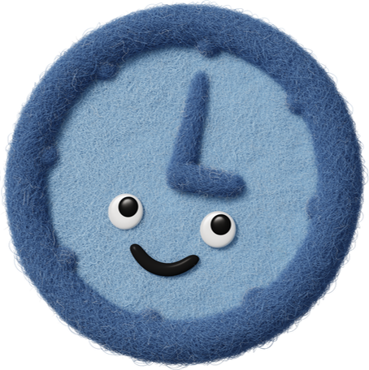

هل مهامك في حالة فوضى؟ مرتب الأولويات سيجعلها تسير في طابور منظم، لتنجز كل شيء بسهولة! وداعًا للتشتت، ومرحباً بالتركيز والإنجاز. دع مهامك تتراصف كقطع البازل، وتتألق كأوركسترا متناغمة، لتستمتع بإتمامها ببراعة